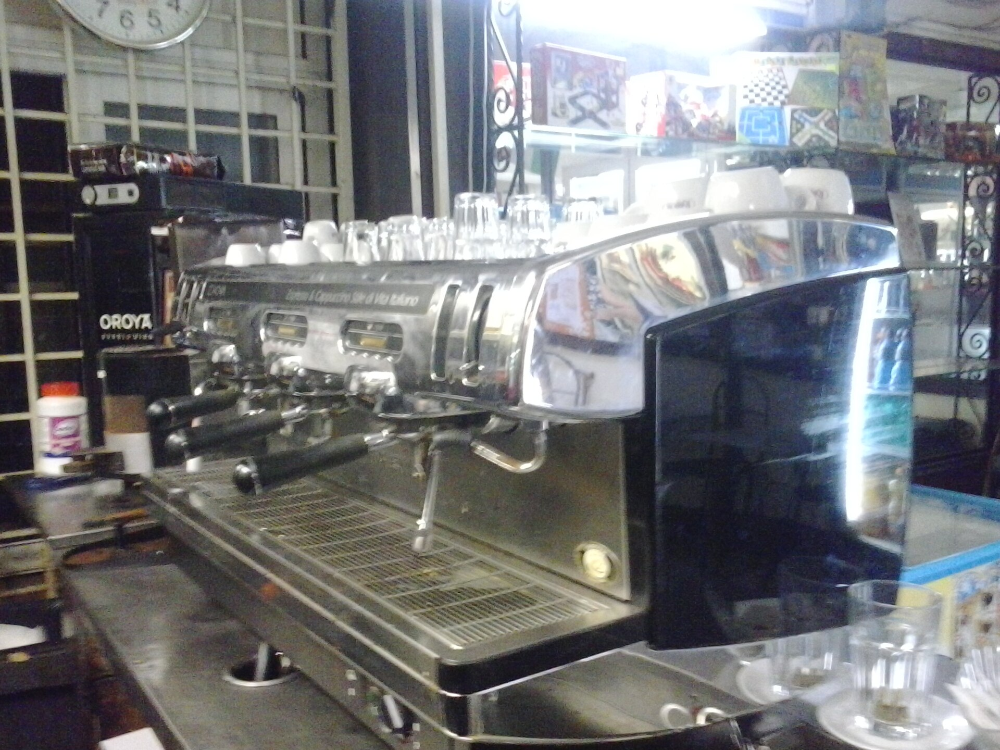
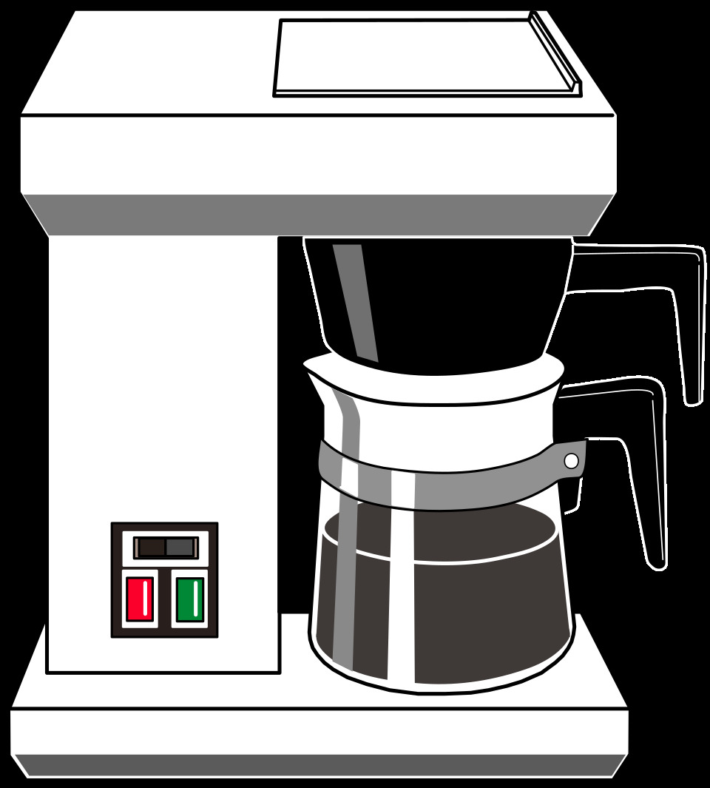

Metodi di preparazione: Moka, Espresso, Filtro e alla turca
Esistono centinaia di metodi di preparazione del caffè, i quali possono variare anche dalla singola regione. Tra i metodi più diffusi troviamo:
Moka

La Moka è una caffettiera ideata e brevettata da Alfonso Bialetti nel 1933, in un’officina di carpenteria metallica a Crusinallo, in Piemonte.
- Principio di estrazione: Percolazione a vapore/ a bassa pressione;
- Macinatura: Media;
- Tempo di estrazione: Pochi minuti a fuoco basso;
- Caratteristiche: Forte, deciso e intenso;
- Istruzioni:
- Si riempie la caldaia inferiore con acqua fredda, non superando il livello inferiore della valvola di sicurezza;
- Si inserisce il filtro a imbuto riempito con il caffè macinato, livellato con un cucchiaino;
- Si avvita saldamente la parte superiore;
- Si mette la moka sul fuoco a fiamma bassa tenendo il coperchio aperto;
- Si rimuove la moka dal fuoco non appena il caffè inizia a gorgogliare e si mescola prima di servire.
Espresso

Il caffè espresso viene chiamato così perchè viene preparato espressamente al momento della sua preparazione. Il primo modello di macchina per espresso risale al 1901, in cui la pressione veniva generata solamente dal vapore, con risultati decisamente scarsi. Nel 1948, venne ripresa e creata la macchina per espresso ad alta pressione, mentre nel 1961 venne inventata la macchina con pompa a erogazione continua.
- Principio di estrazione: Percolazione ad alta pressione;
- Macinatura: Fine;
- Tempo di estrazione: Circa 25 secondi
- Caratteristiche: Molto concentrato e corposo
- Istruzioni:
- Si preriscaldano le tazzine sullo scaldatazze e si fa uno spurgo dell'acqua della macchina;
- Si riempie il portafiltro con circa 7 grammi di caffè macinato per tazza, si livella e si pressa in modo uniforme e perpendicolare con il pressino;
- Si pulisce il bordo del portafiltro da eventuali residui e lo si aggancia alla macchina;
- Si posiziona la tazzina ed eroga: l'estrazione ottimale dura circa 25 secondi per ottenere 25 ml di espresso.
Filtro

Il caffè a filtro è il metodo di preparazione più diffuso al mondo. Con esso l'acqua calda attraversa il caffè macinato e scioglie le sostanze idrosolubili, mentre il filtro trattiene i fondi.
- Principio di estrazione: Percolazione lenta dell'acqua calda attraverso un filtro di carta o metallico;
- Macinatura: Media o medio-fine;
- Tempo di estrazione: 3-5 minuti;
- Caratteristiche: Pulito e aromatico
- Istruzioni:
- Si inserisce il filtro di carta nel dripper o nella Chemex e lo si bagna con acqua calda per eliminare il gusto di carta, poi si getta quell'acqua;
- Si aggiunge il caffè macinato (proporzione standard circa 6g di caffè ogni 100ml di acqua);
- Si bagna inizialmente il caffè con un po' d'acqua calda (circa 30 secondi) per far rilasciare i gas;
- Si versa il resto dell'acqua calda (92-96°C) con movimenti lenti e circolari fino a completamento dell'estrazione.
Alla turca

Il caffè alla turca è il più antico metodo di preparazione, il quale risale al XV secolo.
Il rito si basa sull’utilizzo dell’ibrik, un pentolino di ottone o rame stagnato, dal fondo largo e dal collo stretto, riconoscibile dal suo lungo manico.
- Principio di estrazione: Decozione;
- Macinatura: Estremamente fine;
- Tempo di estrazione: Pochi minuti sul fuoco fino a schiumatura;
- Caratteristiche: Estremamente denso e forte;
- Istruzioni:
- Si versa l'acqua nell'ibrik (circa 60ml a persona) insieme allo zucchero se desiderato;
- Si aggiunge il caffè (circa 6g a persona) senza mescolare subito;
- Si mette sul fuoco basso;
- Quando la schiuma sale verso il bordo, si toglie dal fuoco;
- Si versa parte della schiuma nelle tazzine, poi si rimette brevemente sul fuoco prima di servire con tutta la polvere che si depositerà sul fondo.
Per approfondire: